Chapter 7 Data Visualization
Descriptive statistics summarize data numerically, but visualizations often reveal patterns, trends, and anomalies more quickly. This chapter introduces basic data visualization techniques in R. We begin with Base R graphics to understand core plotting concepts, then move to ggplot2, which provides a more flexible and powerful system for creating graphics.
7.1 Base R Visualizations
Base R graphics are built into R and require no additional packages. They are useful for quick exploratory analysis and for understanding how plotting works at a fundamental level.
7.1.1 Histogram (Base R)
A histogram shows the distribution of a numeric variable. Histograms are useful for assessing the shape, spread, and potential outliers in a numeric variable.
hist(airlinesat_small$age,
main = "Histogram of Number of Age",
xlab = "Number of Age",
col = "lightgray",
border = "white")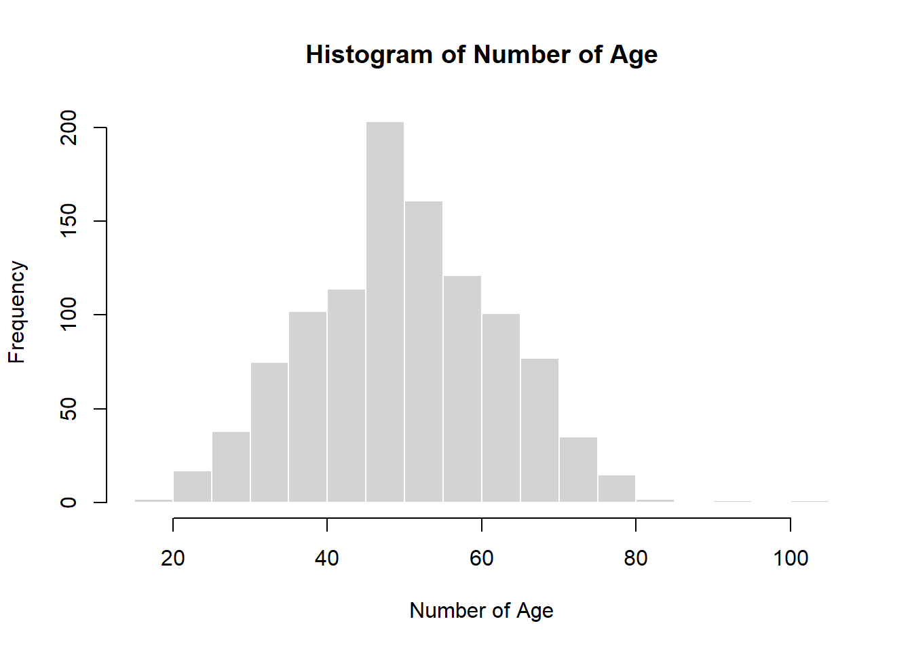
7.1.2 Box-and-Whisker Plot (Base R)
A box-and-whisker plot (often called a boxplot) summarizes the distribution of a numeric variable using five key values:
- Minimum
- First quartile (25th percentile)
- Median
- Third quartile (75th percentile)
- Maximum
Boxplots are especially useful for:
- Comparing distributions across groups
- Identifying skewness
- Detecting potential outliers

7.1.3 Scatterplot (Base R)
A scatterplot displays the relationship between two numeric variables. Scatterplots are commonly used to detect relationships, nonlinear patterns, and outliers.
plot(airlinesat_small$age,
airlinesat_small$nflights,
main = "Age vs Number of Flights",
xlab = "Age",
ylab = "Number of Flights",
pch = 19,
col = "darkgray")
7.1.4 Line Chart (Base R)
Line charts are typically used for ordered data, such as time series or values summarized across an ordered variable. Line charts emphasize change across an ordered dimension rather than individual observations.
First, we’ll simulate some time series data, and then we’ll create the line chart.
# Simulate monthly flight data
set.seed(123)
months <- seq(from = as.Date("2022-01-01"), to = as.Date("2023-12-01"), by = "month")
n_months <- length(months)
flights <- round(800 +
seq(0, 100, length.out = n_months) + # upward trend
80 * sin(2 * pi * (1:n_months) / 12) + # seasonality
rnorm(n_months, mean = 0, sd = 40)) # random noise
flight_ts <- data.frame(month = months, flights = flights)
# Line chart of flights by month
plot(flight_ts$month,
flight_ts$flights,
type = "l",
main = "Number of Flights by Month",
xlab = "Month",
ylab = "Number of Flights",
col = "steelblue",
lwd = 2)
7.1.5 Bar Chart (Base R)
Bar charts are used for categorical variables. They are useful for comparing counts or proportions across categories. They can also show results for different categories of another variable (i.e., a side-by-side bar chart).
status_counts <- table(airlinesat_small$status)
barplot(
status_counts,
main = "Loyalty Status",
ylab = "Frequency",
col = "lightblue"
)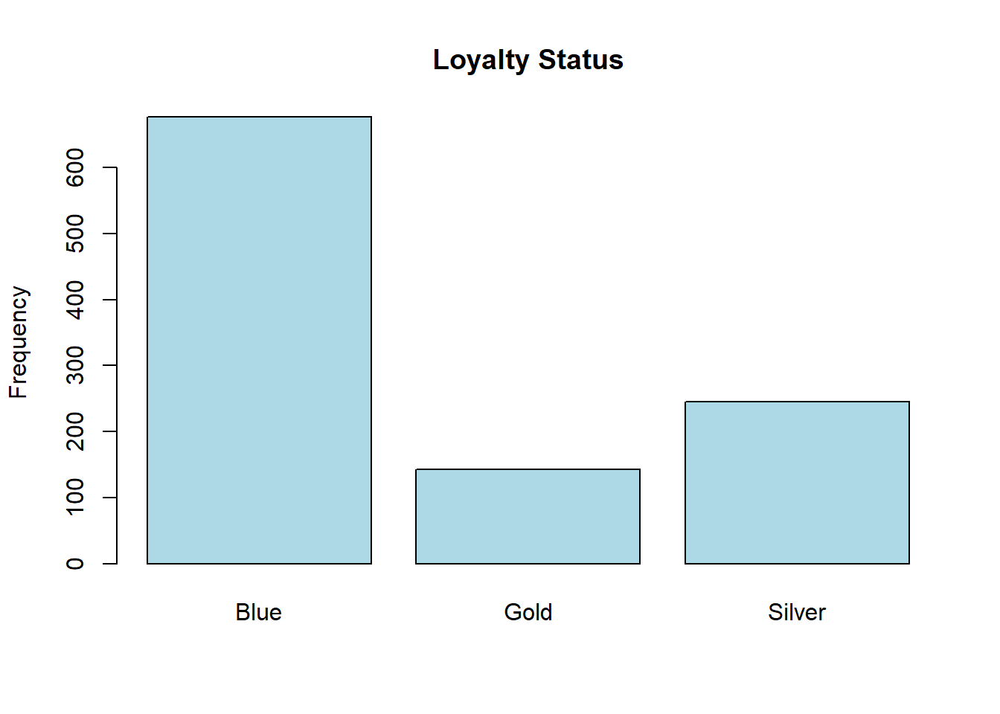
status_gender_tab <- table(airlinesat_small$status, airlinesat_small$gender)
barplot(status_gender_tab,
beside = TRUE,
col = c("steelblue", "darkorange"),
main = "Loyalty Status by Gender",
xlab = "Loyalty Status",
ylab = "Number of Customers",
legend.text = TRUE,
args.legend = list(title = "Gender", x = "topright", bty = "n"))
7.2 Moving Beyond Base R
While Base R graphics are useful, they can become cumbersome when creating more complex plots or when consistent styling is needed. The ggplot2 package provides a structured approach to visualization based on the grammar of graphics.
7.3 Introduction to ggplot2
In ggplot2, plots are built in layers from three main components: data, aesthetic mappings (i.e., a coordinate system identifying x and y variables), and geometric objects (i.e., how the data should be displayed). In addition, the plot can be enhanced by adding additional layers using the + operator. ggplot2 also works very well with dplyr when data manipulation is needed prior to creating the plot.
7.3.1 Histogram
Histograms in ggplot use the geom_histogram() layer. As with many geoms in ggplot2, no options are required in the geom. Here is a basic histogram.
`stat_bin()` using `bins = 30`. Pick better value `binwidth`.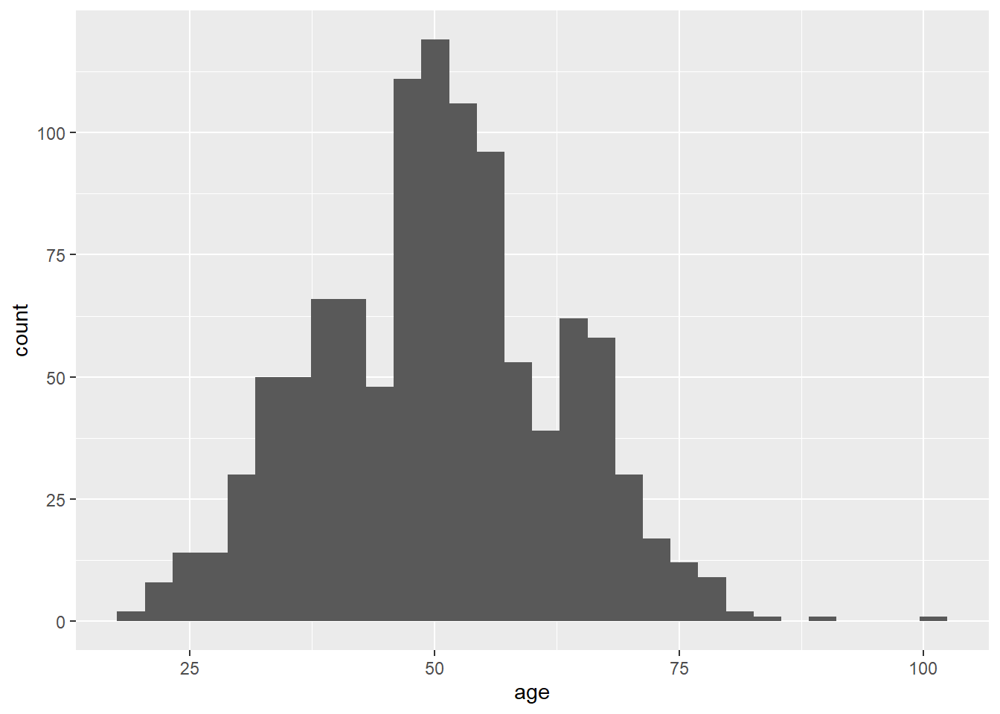
One of the benefits of ggplot2 is the ease of making the plot look more visually appealing often more informative. Here is the histogram with additional options for bins, the fill color, and the outline color, along with labels using the labs layer.
ggplot(airlinesat_small, aes(x = age)) +
geom_histogram(bins = 30,
fill = "orange",
color = "white") +
labs(title = "Histogram of Age",
x = "Age",
y= "Count")
7.3.2 Box-and-Whiskers Plot
Box Plots are drawn with the geom_boxplot() geom, which by default creates a box plot for a continuous y variable, but for each level of a discrete x variable. In addition, the standard box plot does not contain “whiskers”. To get a box plot for only the continuous y variable, use x = "" as the discrete x variable. To add whiskers, include a staplewidth = 1 within the geom_boxplot().
ggplot(airlinesat_small, aes(x = "", y=age)) +
geom_boxplot(staplewidth = 1) +
labs(title="Boxplot for Age",
x = "",
y = "Age")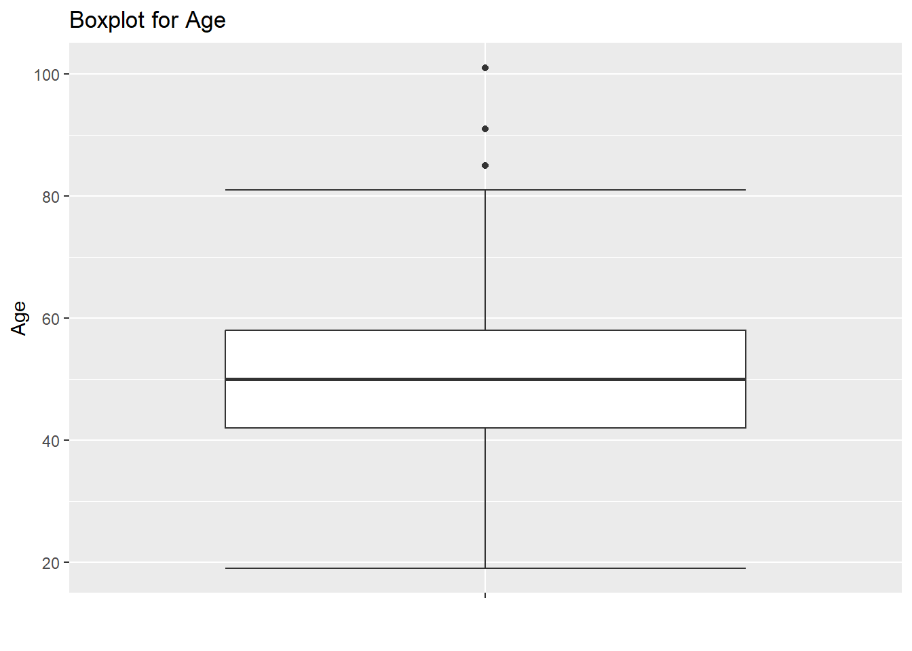
7.3.3 Scatterplot
Scatterplots are drawn with the geom_point() geom and are used to show the relationship between two continuous variables.
ggplot(airlinesat_small, aes(x = age, y = nflights)) +
geom_point() +
labs(title = "Age vs Number of Flights",
x = "Age",
y = "Number of Flights")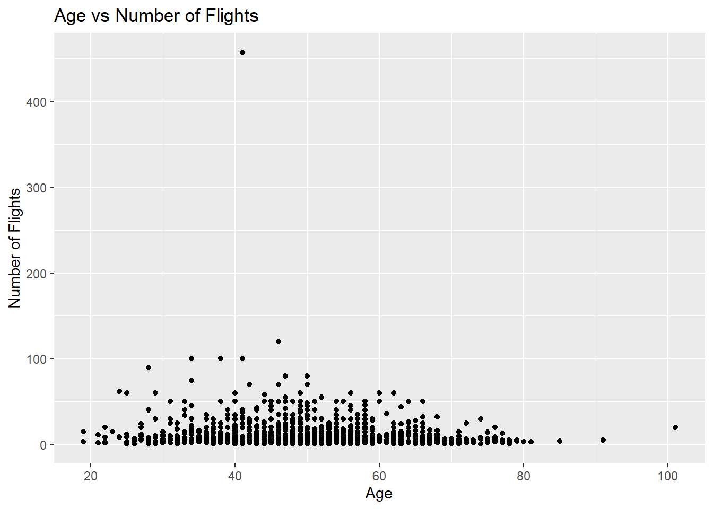
7.3.3.1 Scatterplot with a Categorical Variable
More interesting scatterplots can be created by changing the color of the points by a third, discrete variable. This means adding a new aesthetic in the aes() part.
ggplot(airlinesat_small, aes(x = age, y = nflights, color=status)) +
geom_point() +
labs(title = "Age vs Number of Flights by Loyalty Status",
x = "Age",
y = "Number of Flights",
color = "Loyalty Status")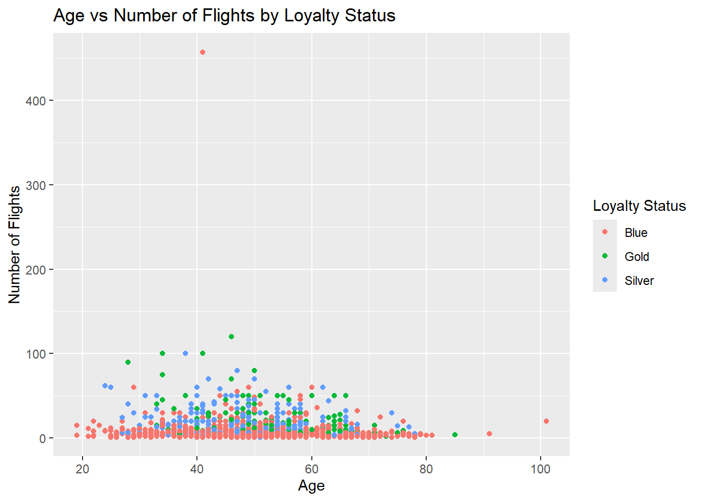
7.3.3.2 Scatterplot with a Trendline
Scatterplots become more helpful when we add a trend line. The most common trend line is a simple regression line, although others can be used. Use geom_smooth(method = "lm", se = FALSE) to add a linear trend line.
ggplot(airlinesat_small, aes(x = age, y = nps)) +
geom_point() +
geom_smooth(method = "lm", se = FALSE) +
labs(title = "Age vs Number of Flights",
x = "Age",
y = "Number of Flights")`geom_smooth()` using formula = 'y ~ x'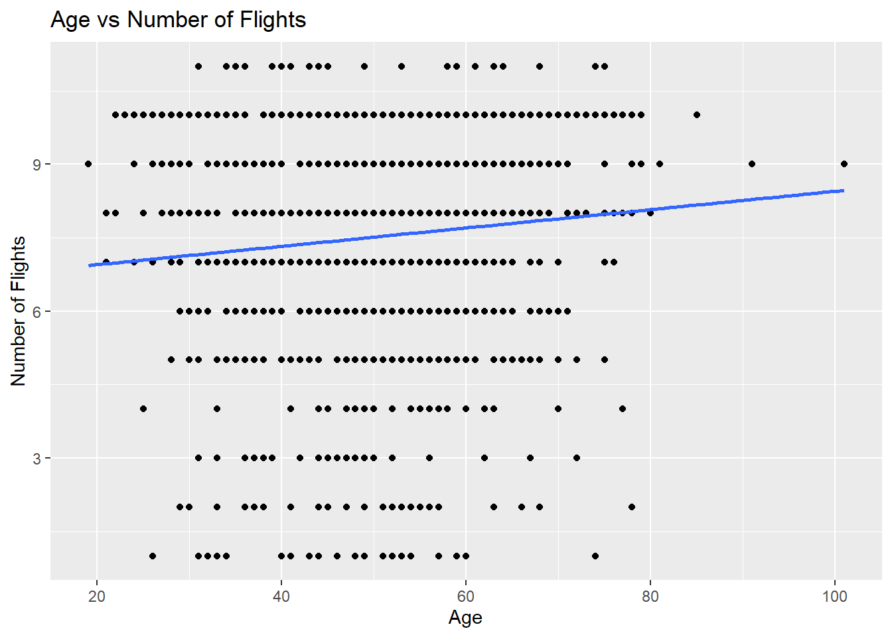
7.3.4 Line Chart
Line charts are drawn with the geom_line() geom and are used to emphasize change across an ordered dimension rather than individual observations. We’ll use the simulated data from the line chart in base R created above.
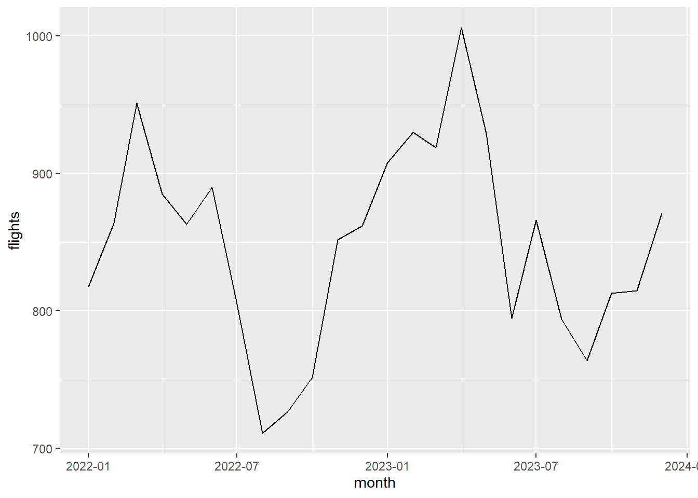
7.3.5 Bar Chart
In ggplot2, bar charts, geom_bar(), are often used for plotting a single discrete variable, while column charts, geom_col(), are used for plotting a discrete variable on the x axis and a continuous variable on the y axis. However, geom_col() can be used for both if the data is “preformatted”, which is easy with dplyr. Other than the first example below, all other examples use geom_col() as it tends to be more flexible when combined with dplyr.
The second example below first organizes the data using dplyr and then passes that result to ggplot.
ggplot(airlinesat_small, aes(x = gender)) +
geom_bar(fill = "lightblue") +
labs(title = "Gender",
x = "Gender",
y = "Count")
airlinesat_small %>%
group_by(gender) %>%
summarise(n=n()) %>%
ggplot(aes(x = gender, y = n)) +
geom_col(fill = "lightblue") +
labs(title = "Gender",
x = "Gender",
y = "Count")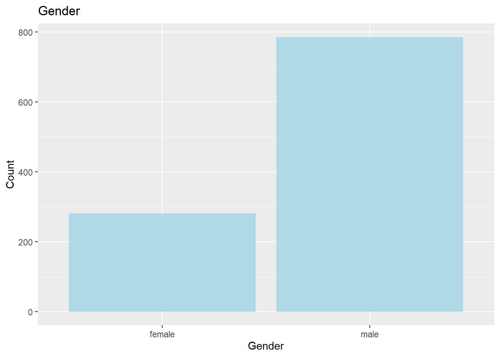
7.3.5.1 Bar Charts for Continuous Variables
Bar charts can be used to show a summary statistic (e.g., mean, median, etc.) of a continuous variable. This is easily done with dplyr. We can also add labels using the geom_text() or geom_label() geoms. geom_text() tends to be more flexible. By default, ggplot places the label at the exact height of the value, but that will overlap with the bar itself. Use the vjust = option to change the position of the label vertically. Usually vjust = 0.95 puts the label just inside the top of the bar, while vjust = -.05 puts the label just outside the top of the bar. You can also change the color of the label with color =, the size of the label with size =, and you can round the label to a specific number of digits with round().
airlinesat_small %>%
summarise(mean_age=mean(age)) %>%
ggplot(aes(x = "", y = mean_age)) +
geom_col(fill = "navyblue") +
geom_text(aes(label = round(mean_age,2)),
vjust = .95,
color="white",
size=8) +
labs(title = "Mean Age",
x = "Age",
y = "Mean")
7.3.6 Grouped Bar Chart
When used with dplyr, it is easy to create side-by-side or stacked bar charts. In the code below, first a table is created and displayed using dplyr. Ultimately, we want to take those results pass them to a ggplot to create the chart.
7.3.6.1 Stacked Bar Chart with Counts
The default is to “stack” the counts.
# A tibble: 6 × 3
# Groups: gender [2]
gender status n
<fct> <fct> <int>
1 female Blue 225
2 female Gold 16
3 female Silver 39
4 male Blue 452
5 male Gold 127
6 male Silver 206airlinesat_small %>%
group_by(gender, status) %>%
summarise(n=n()) %>%
ggplot(aes(x = gender, y = n, fill = status)) +
geom_col() +
labs(title = "Loyalty Status by Gender (Stacked Count)",
x = "Gender",
y = "Count",
fill = "Status")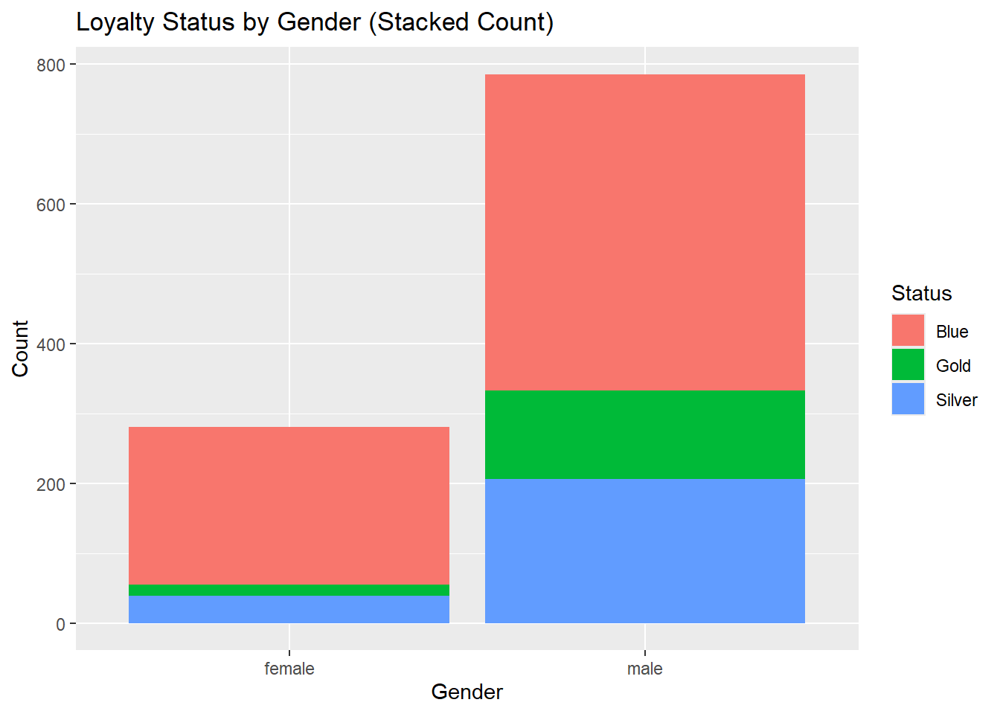
7.3.6.2 Stacked Bar Chart with Percentages
We can create “100%” stacked bar charts by calculating the percentages in the dplyr code. With the code below, the percentages will add up to 100% for the first group_by variable.
airlinesat_small %>%
group_by(gender, status) %>%
summarise(n=n()) %>%
mutate(perc = 100 * n/sum(n))# A tibble: 6 × 4
# Groups: gender [2]
gender status n perc
<fct> <fct> <int> <dbl>
1 female Blue 225 80.4
2 female Gold 16 5.71
3 female Silver 39 13.9
4 male Blue 452 57.6
5 male Gold 127 16.2
6 male Silver 206 26.2 airlinesat_small %>%
group_by(gender, status) %>%
summarise(n=n()) %>%
mutate(perc = 100 * n/sum(n)) %>%
ggplot(aes(x = gender, y = perc, fill = status)) +
geom_col() +
labs(title = "Loyalty Status by Gender (Stacked Percent)",
x = "Gender",
y = "Percent",
fill = "Status")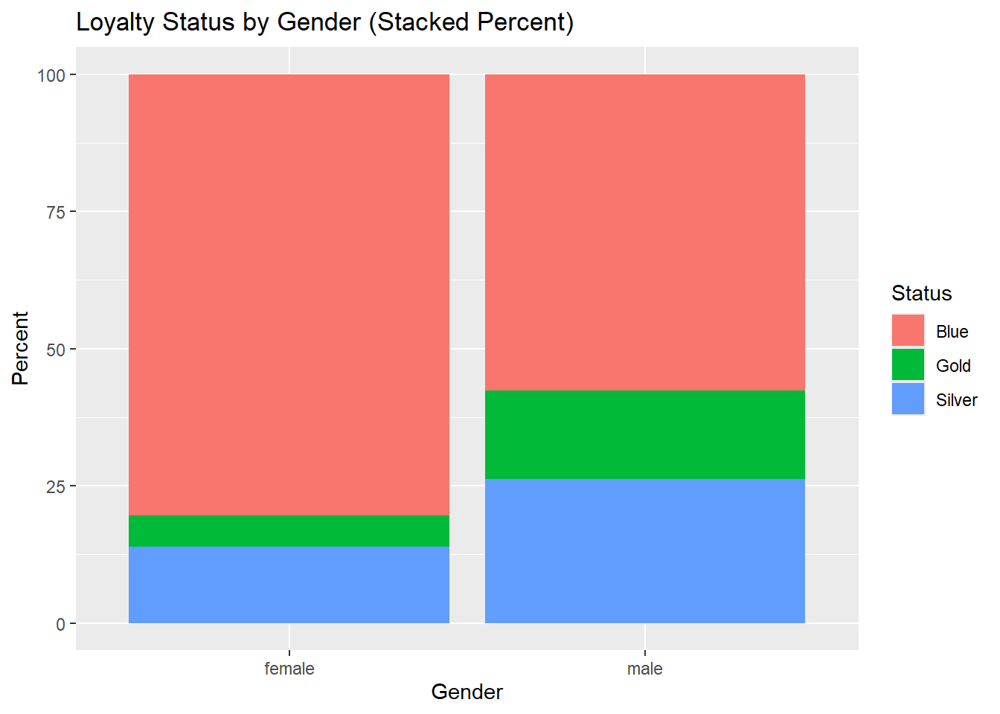
7.3.6.3 Side-by-Side Bar Chart with Counts/Percentages
To create side-by-side bar charts (vs. stacked), use the position = position_dodge(width=.9) option within the geom_col(). If you add labels, you need to use position = position_dodge(width=.9) in the geom_text, otherwise the labels will be on top of each other.
airlinesat_small %>%
group_by(gender, status) %>%
summarise(n=n()) %>%
ggplot(aes(x = gender, y = n, fill = status)) +
geom_col(position = position_dodge(width=.9)) +
geom_text(aes(label = n),
position = position_dodge(width=.9),
vjust = -.05) +
labs(title = "Loyalty Status by Gender (Side-by-Side Count)",
x = "Gender",
y = "Count",
fill = "Status")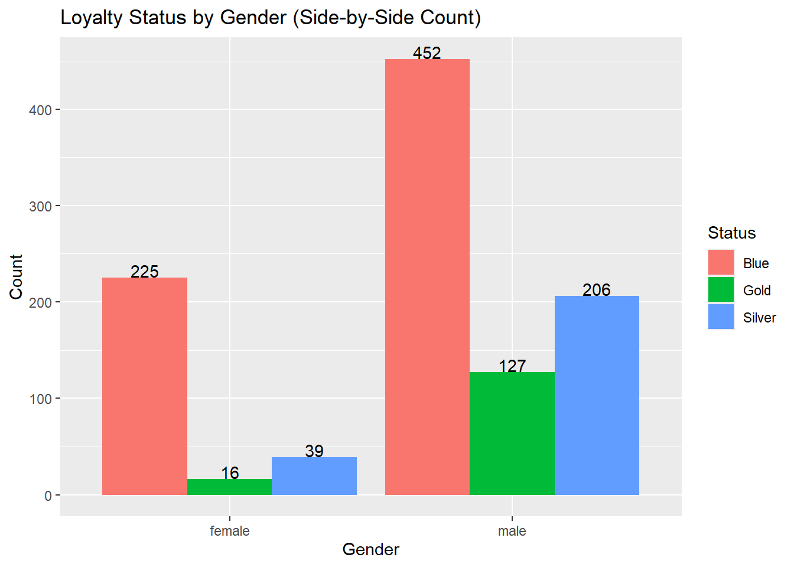
airlinesat_small %>%
group_by(status, flight_purpose) %>%
summarise(n = n()) %>%
mutate(perc = 100*n/sum(n)) %>%
ggplot(aes(x = status, y = perc, fill = flight_purpose)) +
geom_col(position = position_dodge(width=.9)) +
geom_text(aes(label = round(perc, 2)),
position = position_dodge(width=.9),
vjust = -.05) +
labs(title = "Flight Purpose by Loyalty Status (Side-by-Side Percent)",
x = "Loyalty Status",
y = "Percent",
fill = "Flight Purpose")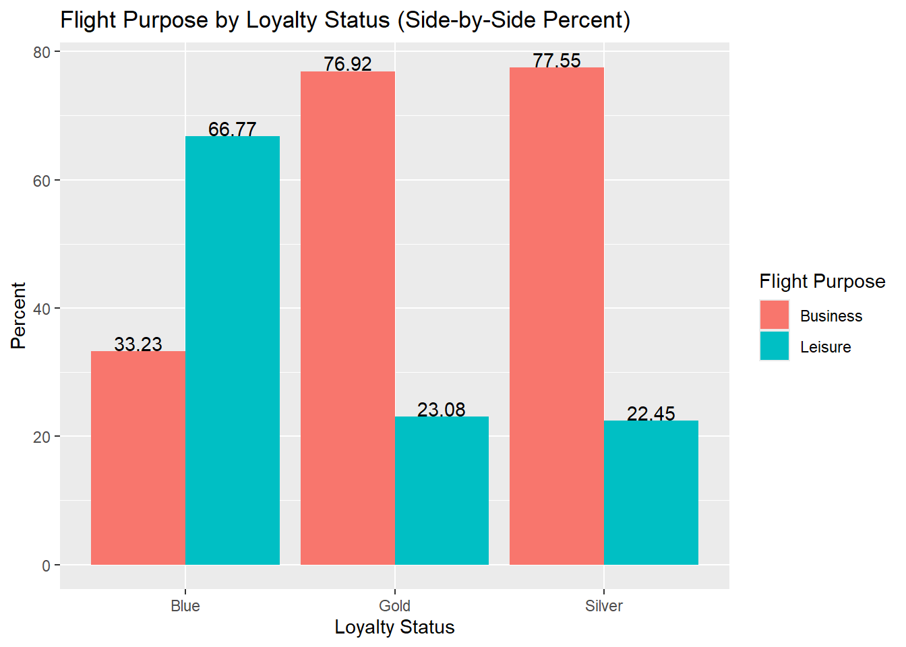
7.3.6.4 Side-by-Side Bar Chart with Continuous Variable
We can also calculate a summary statistic (e.g., mean, median, etc.) for a continuous variable and use that to create a side-by-side bar chart of a discrete variable or two discrete variables.
airlinesat_small %>%
group_by(status) %>%
summarise(mean=mean(nflights)) %>%
ggplot(aes(x = status, y = mean)) +
geom_col(position = position_dodge(width=.9)) +
geom_text(aes(label = round(mean, 2)),
position = position_dodge(width=.9),
vjust = .95,
color="white",
size=8) +
labs(title = "Mean Number Flights by Loyalty Status",
x = "Loyalty Status",
y = "Mean Number of Flights")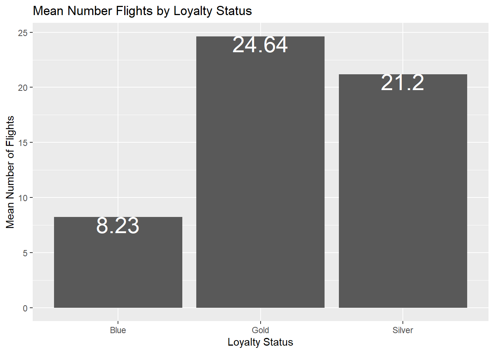
airlinesat_small %>%
group_by(status, flight_purpose) %>%
summarise(mean = mean(nflights)) %>%
ggplot(aes(x = status, y = mean, fill = flight_purpose)) +
geom_col(position = position_dodge(width=.9)) +
geom_text(aes(label = round(mean, 2)),
position = position_dodge(width=.9),
vjust = .95,
color="white",
size=6) +
labs(title = "Flight Number of Flights by Loyalty Status and Flight Purpose",
x = "Loyalty Status",
y = "Mean Number of Flights",
fill = "Flight Purpose")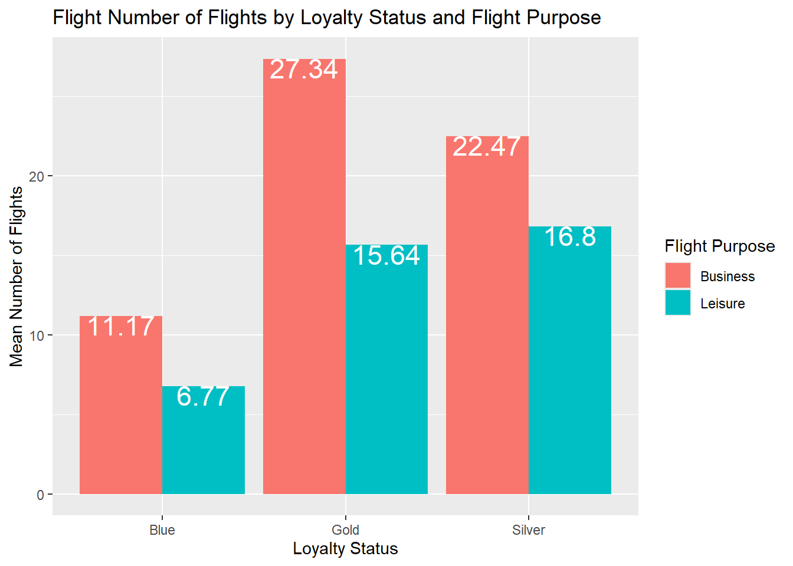